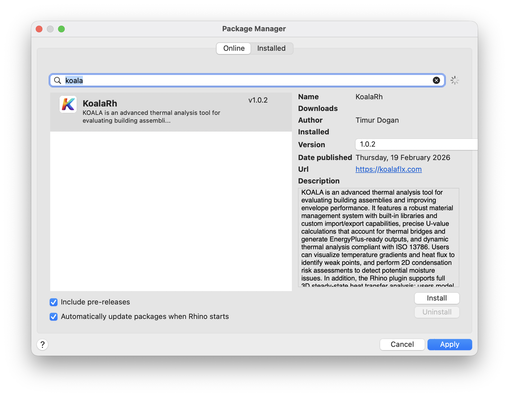

Standalone application for Windows
Download the Windows archive from the download page, extract it and run KOALA.exe.
Standalone application and Rhino plugin installation.
Download the Windows archive from the download page, extract it and run KOALA.exe.
Download the macOS disk image from the download page. Follow the opening procedure below if macOS blocks the application.
Since app notarization requires a paid Apple Developer account, users will have to use the following workaround.
This method allows you to manually authorize a specific app without lowering your overall security settings.
Install KOALA for Rhino using the built-in PackageManager command. Search for "Koala" and select Install.

After installation, you must restart Rhino for the plugin to load
properly. After restarting, type the Koala command into the Rhino
command line to begin. A panel with a layer editor and simulation controls will appear.
Continue with Rhino model setup or a library example.